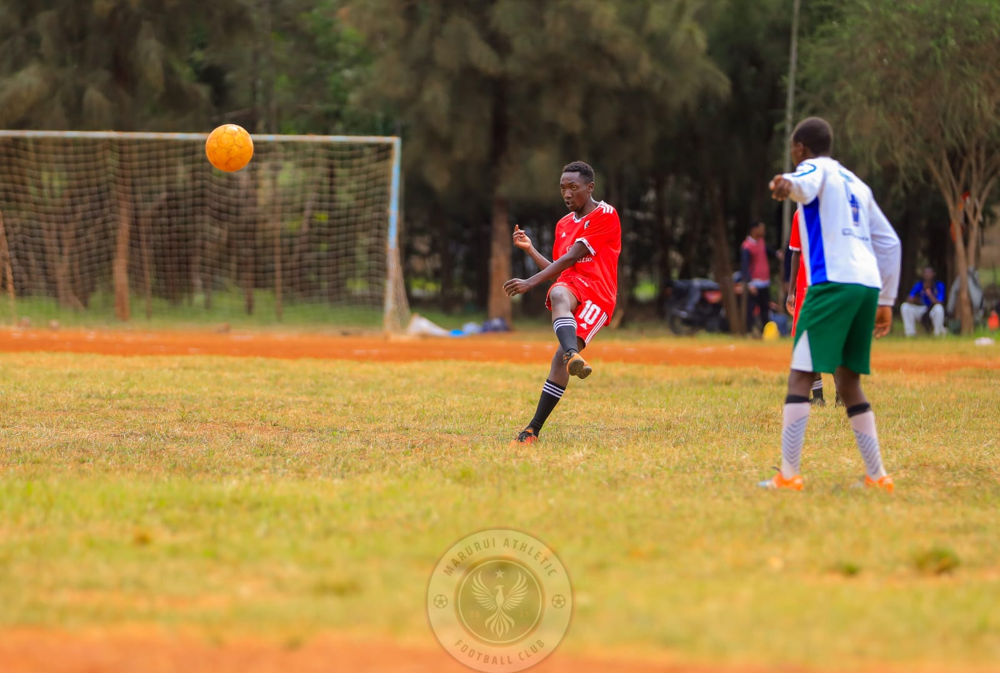
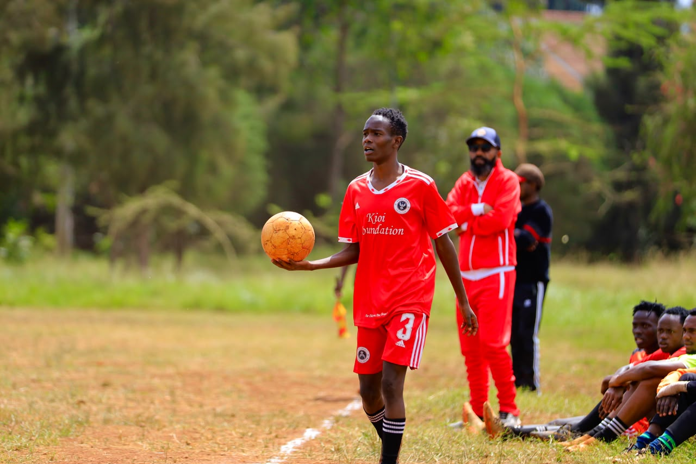
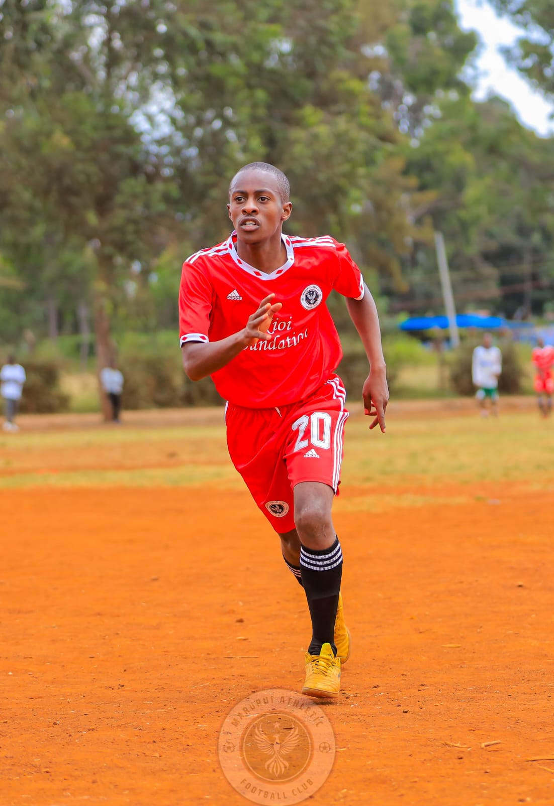
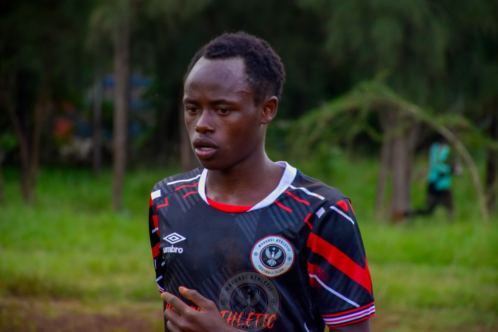
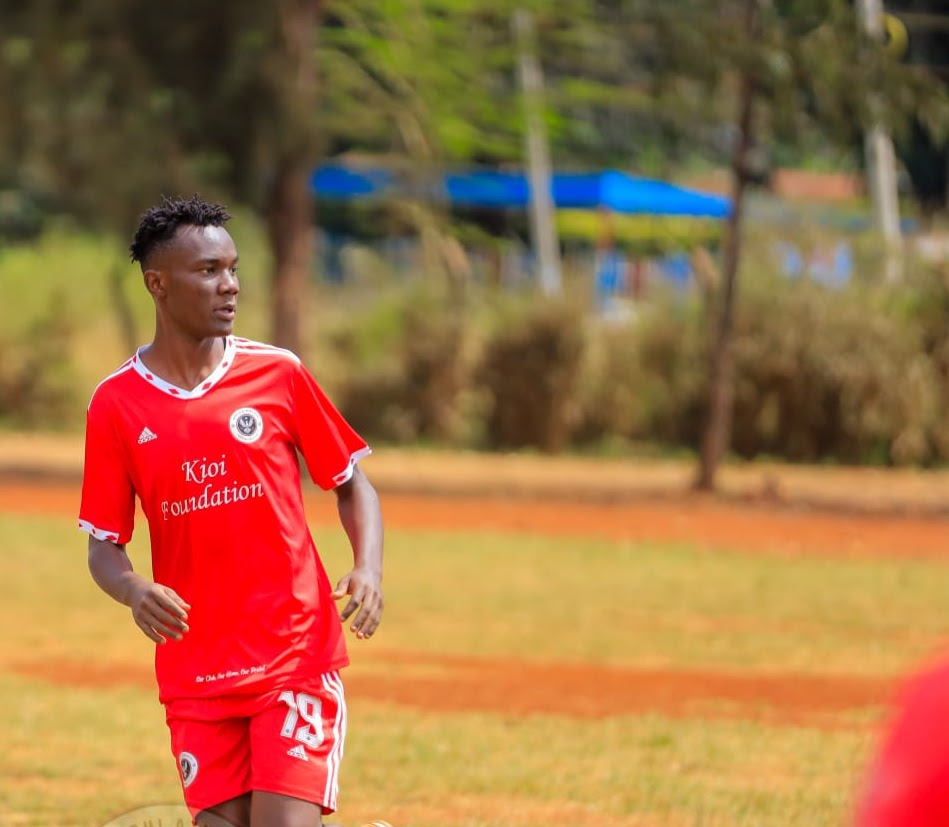
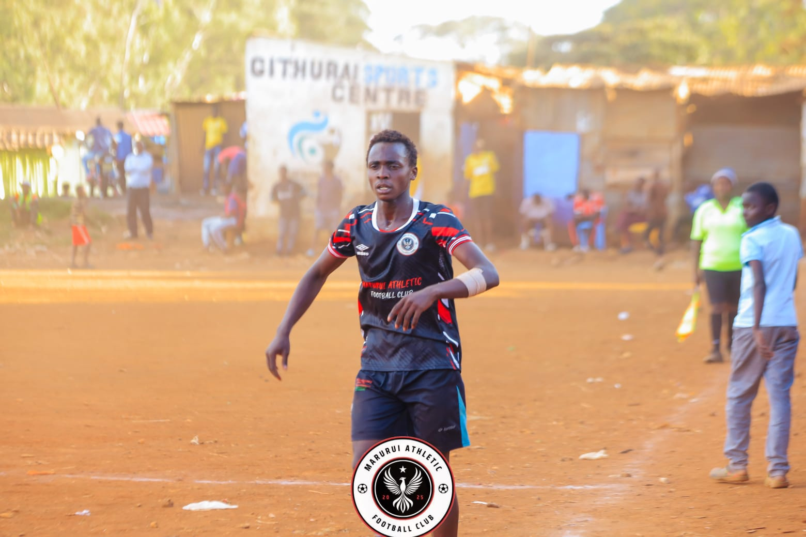
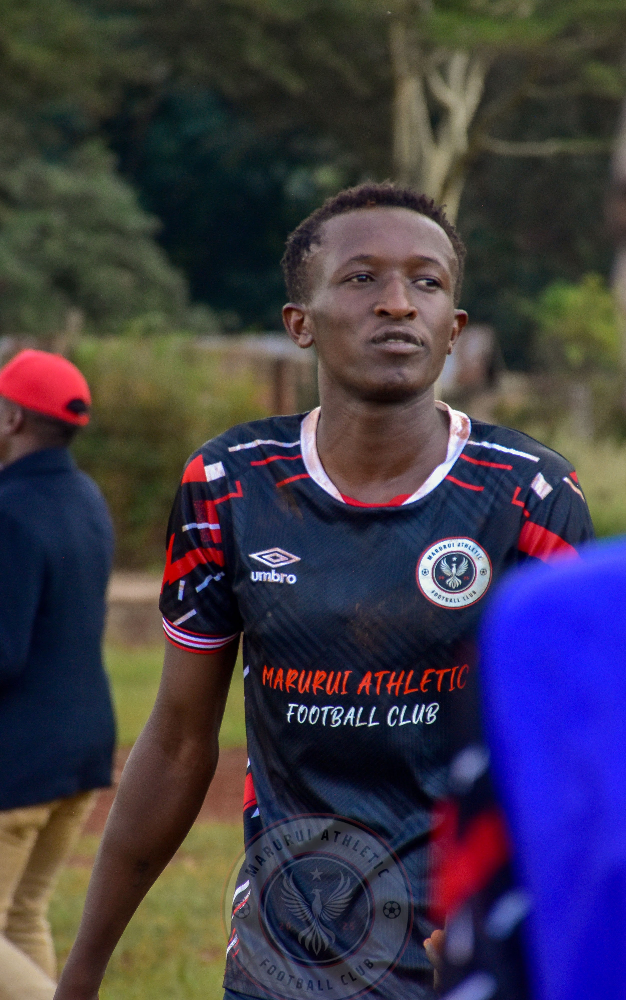
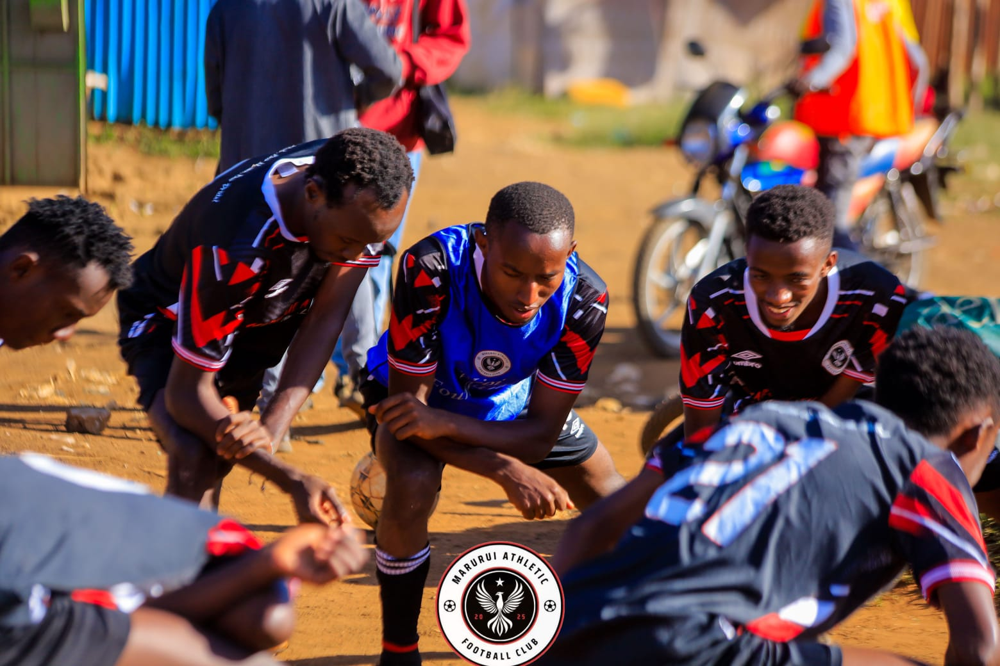
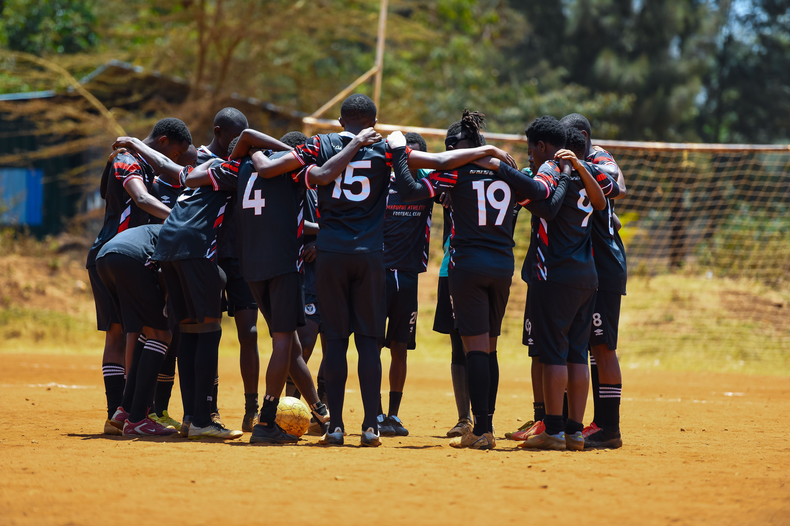

13TH SEPTEMBER 2026
MATCH CONFIRMED
The team continues preparing for our next match on sunday.
READ MORE →WELCOME TO
Our Club.Our Home.Our Pride!!!
WHO WE ARE
Marurui Athletic FC is a community-based football club established in 2025 in Marurui, Roysambu, Nairobi, Kenya. Founded from a passion for football and community development, the club brings together local players and football enthusiasts to develop talent, promote teamwork, discipline, and youth empowerment.
The club began as a community-driven initiative to create opportunities for local footballers to showcase and improve their talents. Through friendship, local pride, and dedication, Marurui Athletic FC has grown into an organized club supported by players, officials, supporters, and the wider community. The club proudly represents Marurui both on and off the pitch.
JOIN M.A.F.CDevelop talented and disciplined football players.
Teamwork, respect, discipline, unity, Development, community.
MEET THE TEAM

Defender
#03
Midfielder
#20
Forward
#21
Midfielder
#8
Forward
#11
Defender
#5UPCOMING MATCHES
Garden Estate Sec
Imani Grounds Ruiru
Garden Estate Sec
MATCH HISTORY
Friendly Match
Friendly Match
Friendly Match
Friendly Match
Friendly Match
LATEST UPDATES

The team continues preparing for our next match on sunday.
READ MORE →
Roysambu residents keep refreshing our page to know whats coming up.
READ MORE →
Vote for your player of the season.
Support M.A.F.C and be part of our journey.
GET IN TOUCH
📍 Marurui, Nairobi, Kenya
📞 +254 700 525 465
📧 maruruiathletic@gmail.com